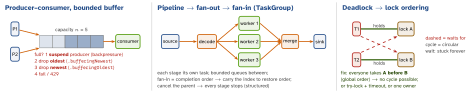

design · folio
In one line: Every concurrent design answers two questions: who may touch
this state (one owner + messages, or many + a lock) and what happens
when one side is faster (a bounded buffer, backpressure, or dropping). The
named patterns — producer–consumer, pool, actor, pipeline, fan-out/fan-in,
reader–writer — are stock answers; Swift gives most of them a
compiler-checked form (actor, TaskGroup, AsyncStream,
Sendable).
Download PDF Print view LaTeX source


Producer–consumer + thread pool
- A bounded buffer decouples rates. Unbounded = the slow side’s problem becomes a memory problem.
AsyncStream’s default policy is unbounded; itsyieldnever suspends, so it can only drop. Real backpressure (producer waits) =AsyncChannel(swift-async-algorithms), whosesendsuspends until consumed. AsyncStreamhas one consumer — concurrent iteration is a programmer error (SE-0314), never a broadcast. Fan-out to many = Combine subject or one stream per listener.- Thread pool / executor: a fixed set of workers pulls jobs from a queue — no per-job thread cost, no oversubscription. GCD: blocked workers make it spawn more (thread explosion). Swift’s cooperative pool has ≈ one thread per core and must never be blocked (
DispatchSemaphore.wait, sync I/O) — it cannot grow, so it starves.
Example — fan-out/fan-in, buffered stream
func thumbs(_ urls: [URL]) async throws -> [UIImage] {
try await withThrowingTaskGroup(of: (Int, UIImage).self) { g in
var out = [UIImage?](repeating: nil, count: urls.count)
for (i, url) in urls.enumerated() {
if i > 3, let r = try await g.next() { out[r.0] = r.1 } // max 4 in flight
g.addTask { (i, try await load(url)) } // fan-out
}
for try await r in g { out[r.0] = r.1 } // fan-in; a throw cancels the rest
return out.map { $0! } // input order restored
}
}
let (events, cont) = AsyncStream.makeStream(of: Event.self,
bufferingPolicy: .bufferingNewest(100)) // drops OLDEST
mqtt.onMessage = { cont.yield($0) } // producer never blocks
Task { for await e in events { await store.apply(e) } } // one consumerFutures/promises vs async/await
A future is a read-only handle to a value that arrives later; the promise is its write side. Chained with then/combinators — control flow and errors move into closures. async/await is the same thing written as straight-line code: try/catch, loops, defer work again; a Task is a future (await task.value). Combine’s Future runs its closure at creation (eager) and emits once — wrap in Deferred to make it lazy.
Actor model
Hewitt 1973, Erlang, Akka: an actor owns its state, has a mailbox, handles one message at a time, and talks only by messages → no locks, no shared state. Swift actor: same isolation, compiler-enforced, but not FIFO (jobs run by priority) and reentrant: at each await inside it the next message runs, so re-check state after suspension (timeline on concurrency). An Erlang process is not reentrant — a synchronous call to itself would hang forever, so OTP’s gen_server:call exits with calling_self instead.
Read–write lock
Many readers or one writer (pthread_rwlock; GCD concurrent queue + .barrier writes). Pays off only for long, contended reads; else it costs more than a mutex, and writers can starve. Replaced by a serial queue / actor (simple), os_unfair_lock/Mutex (fast), or copy-on-write snapshots (readers take a value, the writer swaps it).
Double-checked locking
if x == nil { lock; if x == nil { x = make() } } — the unlocked read races: without acquire/release ordering a reader can see the pointer before the object’s fields. Swift: static let / global let run exactly once, thread-safe (swift_once); lazy var is not thread-safe.
Shared memory + locks vs messages
| shared memory + locks | immutability + messages | |
|---|---|---|
| correctness | every access must remember the lock | ownership makes races impossible |
| failure mode | data race, deadlock, inversion | mailbox growth, stale copies |
| cost | uncontended lock is cheap | copies (CoW), actor hops |
| Swift | Mutex (iOS 18), os_unfair_lock, NSLock | actor, Sendable values, AsyncStream |
await inside (never hold a lock across a suspension).
Deadlock rules
Needs all four Coffman conditions: mutual exclusion, hold-and-wait, no preemption, circular wait. Break one: global lock order; try-lock with timeout; take everything at once; one owner. Never call out (delegate, callback, main.sync) while holding a lock.
Lock-free / CAS
Read, compute, compareExchange(expected:desired:); retry if someone got there first — no blocking, but livelock under contention and the ABA problem. Swift 6: Atomic<Int> in Synchronization (iOS 18), e.g. wrappingAdd(1, ordering: .relaxed). Use for counters and flags; not for data structures.
Reactive streams + backpressure
Subscriber pulls: it signals demand (Subscribers.Demand.max(n)) and the publisher may send no more than that. sink/assign request .unlimited — no backpressure. Bound it with flatMap(maxPublishers: .max(3)), buffer(size:prefetch:whenFull:), or a custom subscriber.
Structured concurrency
Child tasks (async let, TaskGroup) cannot outlive their scope: the parent waits, cancellation flows down, errors flow up, task-locals are inherited. Cancellation is cooperative (checkCancellation, withTaskCancellationHandler for callbacks). SwiftUI .task ties a task to a view’s lifetime. Task {} / Task.detached are escape hatches that leak.
Traps
DispatchSemaphore.wait()in async code — blocks a pool thread; can deadlock the pool.- “Actors make it atomic” — only between
awaits. AsyncStreamis not a broadcast, and unbounded by default.- A task group returns in completion order, not input order.